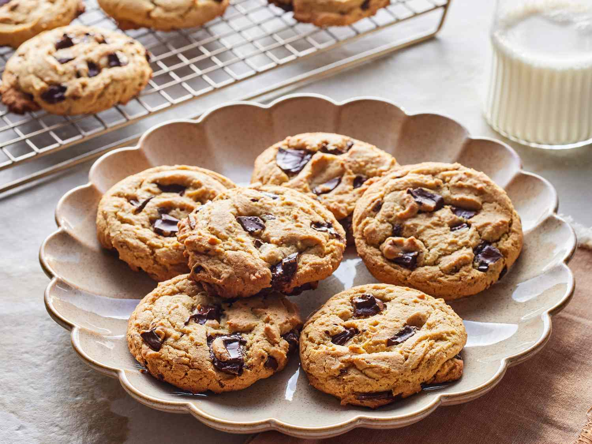

Classic Chocolate Chip Cookies

About This Recipe
These classic chocolate chip cookies are the perfect combination of crispy edges and soft, chewy centers. This recipe has been passed down through generations and creates the most delicious homemade cookies you'll ever taste. Whether you're baking for a special occasion or just craving something sweet, these cookies are guaranteed to satisfy!
Prep Time: 15 minutes
Cook Time: 12 minutes
Total Time: 27 minutes
Servings: 24 cookies
Ingredients
Gather these simple ingredients to create the perfect batch of cookies:
Dry Ingredients
- 2 and 1/4 cups all-purpose flour
- 1 teaspoon baking soda
- 1 teaspoon salt
Wet Ingredients
- 1 cup (2 sticks) unsalted butter, softened
- 3/4 cup granulated sugar
- 3/4 cup packed brown sugar
- 2 large eggs
- 2 teaspoons vanilla extract
Mix-ins
- 2 cups (12 oz) semi-sweet chocolate chips
- 1 cup chopped walnuts or pecans (optional)
Instructions
Follow these step-by-step instructions carefully for the best results:
- Preheat your oven to 375°F (190°C). This is very important for even baking.
- In a small bowl, combine the flour, baking soda, and salt. Mix well and set aside.
- In a large mixing bowl, beat the softened butter with both sugars until the mixture is light and fluffy. This should take about 2-3 minutes.
- Add the eggs one at a time, beating well after each addition. Then add the vanilla extract and mix until fully combined.
- Gradually stir in the flour mixture to the butter mixture. Mix until just combined - do not overmix or your cookies will be tough!
- Fold in the chocolate chips (and nuts if using) with a wooden spoon or spatula until evenly distributed throughout the dough.
- Drop rounded tablespoons of dough onto ungreased cookie sheets, spacing them about 2 inches apart. Important: Don't crowd the cookies!
- Bake for 10-12 minutes or until the edges are golden brown. The centers may look slightly underdone - that's perfect!
- Cool on the baking sheet for 2 minutes, then transfer to a wire rack to cool completely. This helps them set properly.
- Enjoy your cookies with a cold glass of milk! Store leftovers in an airtight container for up to one week.
Chef's Tips
- For extra chewy cookies, slightly underbake them and let them cool on the pan.
- Use room temperature butter for the best texture - it should be soft but not melted.
- Chill the dough for 30 minutes before baking for thicker, chewier cookies.
- Add a sprinkle of sea salt on top before baking for a gourmet touch!
- Don't skip the cooling time on the baking sheet - it's essential for the perfect texture.
Nutrition Information
Per cookie (approximate):
- Calories: 180
- Total Fat: 9g
- Carbohydrates: 24g
- Protein: 2g
- Sugar: 15g
Happy Baking! We hope you enjoy making and eating these delicious chocolate chip cookies. They're perfect for parties, gifts, or just because. Don't forget to share this recipe with friends and family!
Recipe created with love in 2025